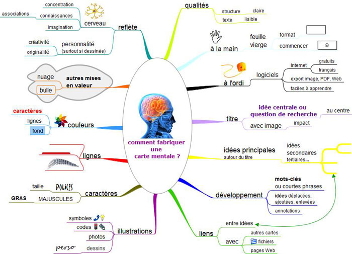

Pédagogie
Sur cette page, des outils méthodologiques, des ressources par discipline et divers projets pédagogiques.
Méthodologie⚓︎
S'organiser
- Apprendre à travailler
- Apprendre efficacement
- D'autres exemples de cartes mentales ici

Améliorer sa rédaction
- La langue française - Le Robert : dictionnaire, conjugaison, orthographe, expressions...
- Question d'orthographe : consultez le site du projet Voltaire.
- Question de conjugaison
- Argumenter : explications, conseils, et méthode...
Les manuels scolaires fourmillent de conseils et fiches méthodes pour améliorer sa rédaction et répondre aux exigences des différents exercices du baccalauréat ( commentaires, dissertations...) dans les différentes disciplines.
Chercher des informations
- Base documentaire PMB du lycée
- Chercher pour trouver
- Vérifier une information sur Internet
- Prendre des notes
- [Elaborer une problématique]
Présenter le résultat de ses recherches, fiches outils et conseils...
Applications utiles
- PIX : S'entraîner pour développer ses compétences numériques en vue de la certification de terminale.
- Tutoriel pour une présentation avec PREZI
- Excel Pratique
EMI⚓︎
Pourquoi et comment s'informer ?
-
S'informer pour comprendre le monde
-
Connaître et croiser les sources d'informations
-
Développer son esprit critique.
-
Lutter contre la désinformation.
-
Gérer ses données personnelles.
-
Maîtriser son temps d'écrans.
Sites pour s'informer
Ressources pour l'EMI
Concours scolaires⚓︎
Concours de critique
En octobre et novembre, les élèves de 1G1 et 1G3, ont participé au concours de critique littéraire organisé par la Région Bretagne en partenariat avec le Rectorat de Rennes et l’association "Bruit de lire". L’objectif pour les élèves est de rédiger une critique sur l’un des romans de la sélection en lice pour le Prix Goncourt des Lycéens.
En apprenant à exprimer leur pensée et à argumenter, les lycéens avancent vers leur autonomie. Au-delà du « j’aime » / « je n’aime pas », les élèves apprennent à formuler une appréciation personnelle sur l’œuvre qu’ils ont choisie et à justifier leur avis. En s’exerçant à ce genre particulier, ils développent de véritables compétences d’argumentation.
Si on lisait à voix haute
Dans le cadre de l'AP, 19 élèves de seconde générale participent cette année au concours "Si on lisait à voix haute" organisé par François Busnel et la Grande Librairie.
Leurs motivations et leurs attentes au moment de choisir cet atelier étaient diverses : pour certains la curiosité, pour d’autres, l’envie de travailler l’oral et de gagner en aisance, pour d’autres encore, aimant déjà lire à voix haute, le désir de participer à un concours national, quelques-uns, aussi, sans motivation particulière, parce que s’étant inscrits dans cet atelier un peu par défaut.
Ensembles, ils ont choisi de relever le défi proposé par le concours et se sont engagés à travailler pour progresser dans cet exercice de lecture à voix haute, à s'entraider pour exceller et donner le meilleur d'eux-mêmes.
Découvrez cet atelier pédagogique sur le Padlet du groupe d'AP.

Prix folio des lycéens
Petit parcours vers la littérature contemporaine : à travers des activités variées, découvrir 6 titres récents aux thèmes diversifiés ; partager ses impressions de lecture par oral et par écrit ; affiner ses goûts, développer son esprit critique en attribuant « coups de cœur » et « coups de griffe » et en votant pour son roman préféré.
Une manière décontractée de se préparer aux épreuves anticipées de Français (écrites et orales) et au Grand Oral du bac !
Informations et actualités du Prix folio sur le site.
Seconde générale⚓︎
AP 2nde générale
Dans le cadre de l'accompagnement personnalisé de la classe de seconde, les élèves participent à un projet long et trois projets courts.
L’objectif est de les guider dans leurs choix d'orientation, en leur proposant soit des modules de découverte variés où ils pourront exprimer leurs talents, soit des activités liées à une discipline spécifique, ou encore des outils pour les aider à surmonter des difficultés identifiées.
PROJETS LONGS (27 semaines)
-
Faire des sciences dans le cadre d’une enquête policière
-
J’aime lire et je participe au « Prix Folio des lycéens »
-
Ecrire à la façon d’un journaliste pour « Le journal du lycée »
-
Science-Fiction, Fantasy, Fantastique : si j’écrivais des nouvelles de SFFF
-
Les maths, j’adore, je veux approfondir
-
Création et innovation technologique : des idées plein la tête pour des projets concrets
-
« Et si on lisait à voix haute » un concours pour travailler mon oral
-
Webradio-capsules vidéos : créer des mini-reportages à diffuser sur l’ENT
-
Une Entreprise dans votre lycée
PROJETS COURTS (9 semaines)
-
Soutien matière : maths (3 groupes)
-
Soutien matière français
-
Prix de l’écoute (Podcast)
-
Travailler les compétences de l’oral
-
S’initier à la philosophie
-
S’initier aux Sciences de l’ingénieur
-
S’initier au mangement
-
Maths approfondies
Disciplines et enseignements de spécialité⚓︎
Avertissement
Ci-dessous les programmes scolaires et des ressources pour les enseignements du lycée général et technologique.
Par souci de clarté sont regroupés sous la même rubrique les disciplines du tronc commun et les enseignements de spécialité proposés au lycée.
Choix des spécialités
Pour le bac général et technologique, pendant l’année de 2de, les élèves choisissent 3 spécialités qu'ils étudieront pendant la classe de 1re, en fonction de leurs goûts et de leurs motivations. Pour la terminale ils choisiront de conserver 2 des spécialités étudiées en 1re.
Pour bien choisir vos spécialités, découvrir les attendus et les programmes de première et de terminale, pour chacune d'entre elles, rendez-vous sur le site du Ministère de l'Education Nationale ou sur le site de l'Etudiant.
D'autres sites d'informations sur les spécialités sont à découvrir sous l'onglet orientation du présent site, vers le padlet SECONDE.
Actualité des disciplines⚓︎
Semaine des mathématiques
Du 7 au 14 mars 2022 c'est la semaine des mathématiques. L'occasion de renforcer l'attractivité des mathématiques. - "Maths en forme(s)" : Découvrez le thème de l'édition 2022 et les propositions d'activités. - M@ths en formes - Ressources
Arts plastiques⚓︎
Programmes
Sur le site Eduscol.
Ressources
EPS⚓︎
Programmes
Sur le site Eduscol
Français / EAF⚓︎
Programmes
Sur le site Eduscol.
Ressources
- Grammaire du Français
- En Français dans le texte : Emission de France Culture proposant la lecture, par une comédienne ou un comédien, d'un texte (de littérature française le plus souvent, ou d'histoire ou de philosophie) au programme des classes de première ou de terminale, lecture suivie d'une analyse par des professeurs et d'une dictée proposée à l'antenne et sur les réseaux sociaux.
- Outils numériques pour les lettres et LCA
HGGSP / Histoire-géographie⚓︎
Programmes
Sur le site Eduscol.
Ressources
- Le dessous des cartes : le magazine géopolitique d'Arte.
- France Culture : Analyses et décryptages : comprendre les relations internationales et la géopolitique du monde actuel grâce aux émissions et podcasts de France Culture.
- Lumni : Série Géopoliticus pour décrypter la géopolitique à l’aide d’infographies animées pour comprendre le monde et les grands enjeux politiques de notre temps.
- IRIS - Institut de Relations Internationales et Stratégiques
Séances pédagogiques
Etudes et géopolitique
Si la géopolitique vous intéresse, pourquoi ne pas continuer vos études dans cette voix à l'Institut Français de géopolitique
HLP / Philosophie⚓︎
Programmes
Sur le site Eduscol
Ressources
- Encyclopédie philosophie
- La philosophie : Les grands philosophes, les courants... préparation du BAC PHILO (Conseils méthodologiques - Résumés - Citations...)
- Histoire de la philosophie
- Les philosophes dans le métro
- Le pouvoir de la parole : Série de quatre émissions sur le pouvoir de la parole, diffusées sur France Culture en novembre 2019. (Episode 1 : Parler est-ce agir ? - Épisode 2 : Quand la parole ne suffit pas : les stoïciens au secours de l’écologie - Épisode 3 : Quand dire, c’est guérir - Épisode 4 : Devient-on quelqu’un d’autre quand on ment ?).
LLCE / Langues vivantes⚓︎
Programmes
Sur le site Eduscol
Ressources communes
- Lingolia
- Fiches de vocabulaire
- Question de conjugaison : Français, Anglais, Espagnol, Allemand, Italien...
- Verbes irréguliers anglais
- Duolingo
- Memrise
- British Council
- BBC
Allemand
- L'Allemand un plus : Pourquoi choisir l'Allemand ? Brochure éditée par le Goethe Institut, le ministère de l'Education de la jeunesse et des sports et L'Institut Français.
Mathématiques / SNT⚓︎
Programmes
Sur le site Eduscol
Ressources
- Spécialité maths
- M@th et tiques
- Méthode Math
- Kahn Academy : Cours en mathématiques...
- Mathsenvie : Une façon originale d’aborder les mathématiques : motivante, concrète et en lien avec le quotidien des élèves. Activités de la maternelle au lycée...
- Podcast - France Culture
- Annales
NSI⚓︎
Programmes
Sur le site Eduscol
Ressources
- Histoire de l'informatique, d'Internet et du Web
- Cours sur Python
- Kahn Academy : Cours en mathématiques, sciences, informatique, économie et finance, arts.
- PIXEES : ressources pour les sciences du numérique.
Physique Chimie⚓︎
Programmes
Sur le site Eduscol
Ressources
- Méthode physique : cours, exercices, viédos, conseils méthodologiques.
- CultureSciences - Chimie
- Chimie générale : sur le site Kahn Academy.
- WebPhysique : Cours, exercices pour apprendre et découvrir les sciences physiques au lycée.
SES⚓︎
Programmes
Sur le site Eduscol
Ressources
- **Cité de l'économie : Leçons d'économie : vidéos de 2mn pour faire le tour des questions essentielles de la discipline (marchés, échanges, régulation, TVA, CAC 40...) - Histoire de la pensée économique (fresque) - Les clés de l'éco : explication des Mécanismes économiques, monétaires, financiers - WEBséries : vidéos et quiz.
- CCI Bretagne : Le site de la Chambre de Commmerce et d'Industrie de bretagne.
- DGCCRF / Direction générale de la concurrence, de la consommation et de la répression des fraudes, du site du Ministère de l'économie, des finances et de la relance.
- INSEE : Insitut national de la statistique et des études économiques.
- Institut National de la consommation
- 60 millions de consommateurs
- Pour l'éco : le site de la revue.
- Autres ressources en SES
SI⚓︎
Programmes
Sur le site Eduscol
Ressources
SVT⚓︎
Programmes
Sur le site Eduscol
Ressources
Série STMG⚓︎
Programmes
Sur le site Eduscol
Ressources
Réviser pour le BAC⚓︎
S'organiser, planifier son travail
Des sites pour réviser et s'entraîner
- Tout pour le BAC : Le site Phosphore propose des outils réviser le BAC 2022.
- Banque de sujets : banque de données des sujets d'examens du baccalauréat général, technologique et professionnel.
- Studyrama